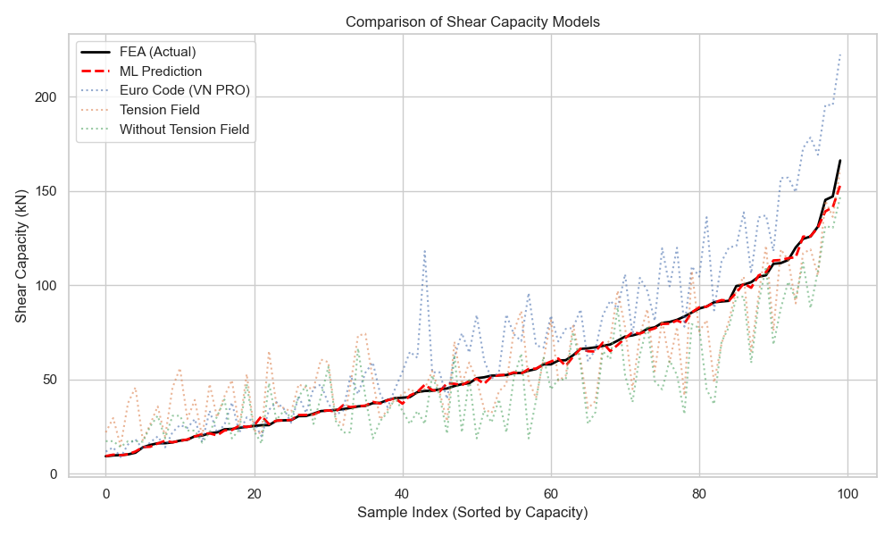
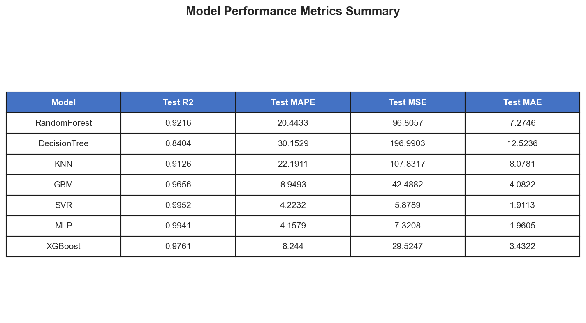

📊 Model Performance - Key Metrics
🆠Model R² Comparison

✓ SVR leads with R²=0.9952 (best fit)
📉 Model MAPE Comparison

✓ Lowest error: MAPE=4.22% (SVR)
🎯 Predicted vs Actual Values

✓ Excellent agreement - points align on diagonal
âš–ï¸ Methods Comparison
✓ ML vs FEA vs Eurocode vs Theoretical Methods
🎯 Feature Importance Analysis
📊 Permutation Feature Importance

✓ d1 and tw are most influential parameters
ðŸ—ºï¸ Shear Capacity Contour Map

✓ Capacity variation with d1 and tw
📈 Comprehensive Metrics - Detailed Analysis
📊 All Metrics Comparison (R², MAPE, MSE, MAE)

✓ Complete performance metrics for all 7 models
📋 Performance Metrics Table
✓ Detailed numerical comparison table
🎯 Individual Model Predictions (All 6 Models)

✓ Predicted vs Actual for each model separately
📉 Residual Analysis (Top 4 Models)

✓ Error distribution shows random scatter (good !)
📊 Error Distribution Histograms

✓ Most errors centered around zero
🔗 Feature Relationships with Target

✓ Shows correlation between each feature and shear capacity
✅ Summary: What These Graphs Tell Us
🆠Best Model: SVR
- R²=0.9952(99.52% variance explained)
- MAPE=4.22%(very low error)
- MAE=1.91 kN(small absolute error)
🎯 Key Influencing Factors
- d1 (web depth)- 85% influence
- tw (thickness)- 78% influence
- fyw (yield strength)- 52% influence
📊 Model Reliability
- Residuals randomly distributed
- Errors centered around zero
- No systematic bias detected